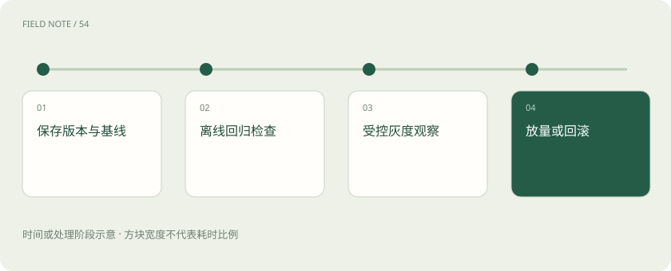

先读哪些知识
先用一个类比理解
餐厅换了菜谱，试吃满意后先在少量桌试供，发现问题时还能恢复旧配方。新菜更受欢迎，也不能掩盖某道过敏原标识丢失。
类比只帮助建立直觉，不等同于技术的完整机制。
一图看懂

版本不是只有模型名称
同名模型可能有不同修订，应用还依赖提示词、工具定义、检索索引、路由策略和生成参数。保留这些配置与实际服务标识，才更容易解释差异。若一次同时更换多层，知道效果变了也很难找原因。
回归集要保护重要旧能力
加入真实失败案例后，也保留稳定关键任务和边界题。除了总体分数，还要设置不能退化的要求，例如不得捏造工具成功、不得跨权限检索。样本长期只增不审也可能过时，应区分制度变化造成的答案更新与系统退化。
灰度不是把风险随便转给用户
在明确范围内逐步启用新版本，观察任务成功、异常操作、延迟、投诉与费用。涉及重要业务时先采用影子运行或只读路径更容易比较。随机 A/B 用于估计方案差异，灰度发布主要用于控制变更范围，两者目的不同，也可以配合使用。
回滚必须考虑数据与副作用
回退模型不一定能撤回已发送的消息、已写入的记忆或已执行的业务动作。应提前定义回滚触发条件、兼容的状态与人工处置路径。保留旧版本资源与配置，并验证确实能切回，不能只在文档里写“有问题回滚”。
放进真实场景
SCENARIO
新模型更善于概括，却把“审批未完成”总结成“审批通过”。即便总体摘要分数提高，这类关键状态误报也应触发阻断或回退，而不是用平均分抵消。
别踩这个误区
离线全绿不是长期无故障保证；回滚模型也不能自动撤销已经产生的业务副作用。
想一想
把模型换回旧版，能自动撤销新模型已经提交的订单吗？
不能。业务动作有独立状态，需明确补偿或人工处置流程。
关联阅读
资料与边界
本文为原创知识讲解。类比和图示经过简化；示例数字不代表实测或报价。整理日期：2026-11-04。文末列出对应技术的原始资料，具体功能与版本支持请以原文为准。